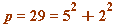

Fermat's two-square theorem (with the 'signed' element incorporated into its statement)
Fermat's (beautiful) two square theorem (in modified form, for the purposes of the upcoming Gauss binomial coefficient congruence).
For every prime  (mod 4) there are unique integers, odd (which may involve a sign change) and (positive) such that
(mod 4) there are unique integers, odd (which may involve a sign change) and (positive) such that
Examples to illustrate.
- , here the odd is already
- , here the odd
 is not
is not , but if we replace with - so that
, but if we replace with - so that  then we have the representation mentioned above in the modified Fermat two-square theorem.
then we have the representation mentioned above in the modified Fermat two-square theorem.
Here I exhibit these representation for all such primes up to 200:
| > | L := []:
for p from 5 by 4 to 200 do if isprime(p) then L := [op(L), p] fi od: for p in L do a||p := a_sign(p): ### see the Procedures section b||p := sqrt(p - a||p^2): od: print(``); print(array([ [ 'p', ``, ``, 'a', ``, ``, 'b' ], seq( [p, ``, ``, a||p, ``, ``, b||p ], p = L ) ] ) ): print(``); lprint(`This shows the UNIQUE a = 1 (mod 4) and (positive) b in the modified Fermat two-square theorem.`); |
| `This shows the UNIQUE a = 1 (mod 4) and (positive) b in the modified Fermat two-square theorem.` |
| > |